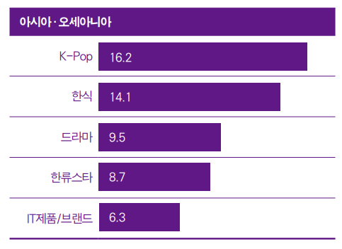

| 한국 연상 이미지 | 국가별 한류 순위 |
|---|---|
|  | |
아시아・오세아니아 지역은 ‘K-Pop’, ‘한식’, ‘드라마’, ‘한류스타’, ‘IT제품/브랜드’ 순으로 연상률이 높았다.
전년도 조사와 마찬가지로 ‘K-Pop’과 ‘한식’이 각각 5개국과 3개국에서 1위를 차지하며 연상 이미지 상위권을 양분했다.
태국, 말레이시아, 인도네시아, 베트남 등 아세안 지역에서 ‘K-Pop’에 대한 연상률이 가장 높았고, 중국, 일본, 대만 등 동아시아에서는 ‘한식’에 대한 연상률이 높았다.
특히 일본에서 ‘한식’은 30%에 육박하는 높은 응답률을 기록해 일본 내 ‘한식’의 인기를 확인할 수 있었다.
지난 5년과 마찬가지로 이번 조사에서도 유일하게 인도만 ‘IT제품/브랜드’의 연상률이 가장 높았다.
그러나 응답률은 전년에 비해 소폭(1.8%p) 감소했다.
한편 ‘드라마’와 ‘한류스타’도 인도를 제외한 대부분 아시아・오세아니아 국가에서 상위 연상 이미지로 꼽혔다
아시아·오세아니아 지역의 전체 문화콘텐츠 소비량 대비 한류콘텐츠 소비량 비중은 29.87%였고, 비중이 가장 높은 콘텐츠는 뷰티(35.12%)인 것으로 조사됐다.
그 다음으로 드라마, 패션, 영화, 예능 순으로 비중이 높은 것으로 나타나 전반적으로 한국 영상콘텐츠와 라이프스타일 제품에 대한 소비가 활발한 것을 알 수 있었다.
한편 아시아·오세아니아에서 한국 드라마, 예능, 영화, 음악, 애니메이션의 주요 접촉 경로는 ‘온라인/모바일 플랫폼’이 가장 큰 비중을 차지했다.
그러나 ‘TV’를 통한 접촉 비중도 여전히 콘텐츠별로 약 58%~74%를 기록해 뉴미디어와 전통 미디어의 공존 현상이 심화하고 있었다.
한국 패션, 뷰티, 음식은 주로 ‘SNS상의 영상과 사진’을 통해 접촉하는 것으로 조사됐고, ‘한국 영상콘텐츠’를 통한 접촉도 그에 상응하는 것으로 나타났다.
출판물의 경우에는 ‘자국 사이트를 통한 이용’이 ‘글로벌 사이트 이용’에 비해 15%p 정도 많았고, 게임은 ‘온라인과 모바일을 통해 직접 플레이’하는 경우가 다수였다
아시아·오세아니아는 전체 권역 중 세 번째로 높은 한국 제품·서비스 향후 이용 의향을 보인 지역이었다.
한국 제품 중에서는 전반적으로 ‘식품’과 ‘화장품’, ‘의류’에 대한 구매 의사가 강했고 서비스의 경우엔 ‘한국 방문’과 ‘한국 음식점 식사’에 대한 의향이 비교적 높았다.
국가별로 살펴보면 태국, 말레이시아, 인도, 베트남, 호주는 지역 평균보다 높은 향후 이용 의향 수치를 기록했고 일본과 인도네시아는 현저히 낮은 이용 의향을 보였다.
그중 일본은 전년도에 이어 전체 18개국 중 가장 낮은 이용 의향을 보였고 ‘한국 식품 및 화장품’ 구매와 ‘한국 음식점 식사’를 제외하면 대부분 제품·서비스가 10~20%대의 저조한 수치를 기록했다.
반면 호주는 전년 대비 이용 의향이 18%p 증가해일본과 상반된 모습을 보였다. 특히 ‘한국 식품’ 구매와 ‘음식점 식사’, ‘한국 방문’ 의향은 60% 중후반대를 기록했다